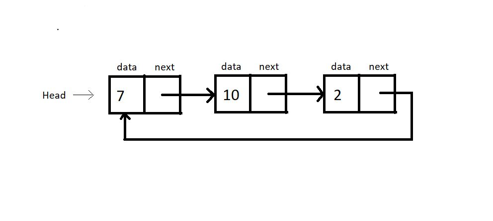

A circular linked list is a linked list hwere the last element points to the first element (head) heance forming a circular chain. There is no node pointing to the NULL, indicating the absence of any end node. In circular linked lists, we have head pointer
but no starting of this list.
Refer to the illustration of a circular linked list below:

Creating a circular linked list is no different from creating a singly linked list. One thing we do differently is that instead of having the last element to point to NULL, we'll make it to point to the head.
struct Node
{
int data;
struct Node *next;
};
int main(){
struct Node *head;
struct Node *second;
struct Node *third;
struct Node *fourth;
// Allocate memory for nodes in the linked list in Heap
head = (struct Node *)malloc(sizeof(struct Node));
second = (struct Node *)malloc(sizeof(struct Node));
third = (struct Node *)malloc(sizeof(struct Node));
fourth = (struct Node *)malloc(sizeof(struct Node));
// Link first and second nodes
head->data = 4;
head->next = second;
// Link second and third nodes
second->data = 3;
second->next = third;
// Link third and fourth nodes
third->data = 6;
third->next = fourth;
// Terminate the list at the third node
fourth->data = 1;
fourth->next = head;
return 0;
}
Opearations on circular linked lists can be performed exactly like a singly linked list. It's just that we have to maintain an extra pointer to check if we have gone through the list once.
void linkedListTraversal
(struct Node *head){
struct Node *ptr = head;
do{
printf("Element is %d\n", ptr->data);
ptr = ptr->next;
}while(ptr!=head);
}
struct Node * insertAtFirst(struct Node *head, int data){
struct Node * ptr = (struct Node *) malloc(sizeof(struct Node));
ptr->data = data;
struct Node * p = head->next;
while(p->next != head){
p = p->next;
}
// At this point p points to the last node of this circular linked list
p->next = ptr;
ptr->next = head;
head = ptr;
return head;
}